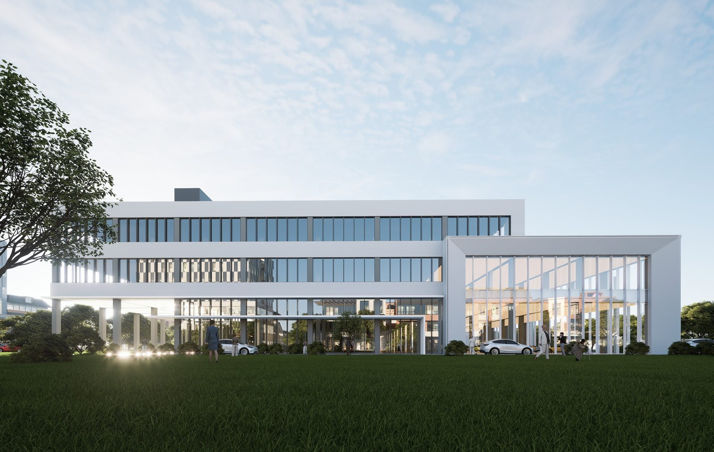

LV GUOXIANG · ARCHITECTURE & BIM
在空间中，
看见可能。
建筑设计与数字实践 · 中国 / 新加坡
作品集 / PORTFOLIO
以作品，展开对话。
从城市到建筑，从设计到数字协同。
项目暂时无法加载，请重试。
关于 / ABOUT
吕国祥
建筑师 · BIM 从业者
来自重庆，工作跨越建筑设计、BIM 与数字实践，项目经历涉及中国与新加坡。从总体规划到具体建筑，关注设计与实施之间的连接。
在 LinkedIn 联系我 ↗
LV GUOXIANG · ARCHITECTURE & BIM
建筑设计与数字实践 · 中国 / 新加坡
从城市到建筑，从设计到数字协同。
项目暂时无法加载，请重试。
建筑师 · BIM 从业者
来自重庆，工作跨越建筑设计、BIM 与数字实践，项目经历涉及中国与新加坡。从总体规划到具体建筑，关注设计与实施之间的连接。
在 LinkedIn 联系我 ↗